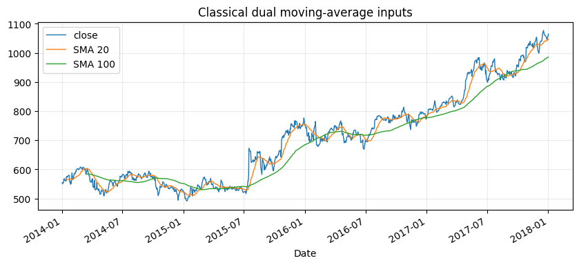
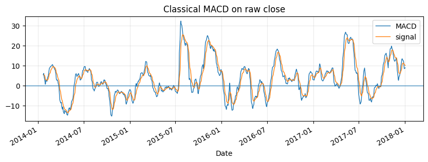
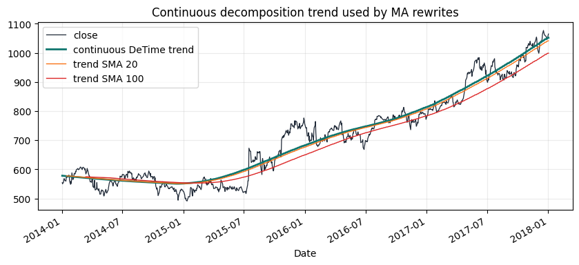
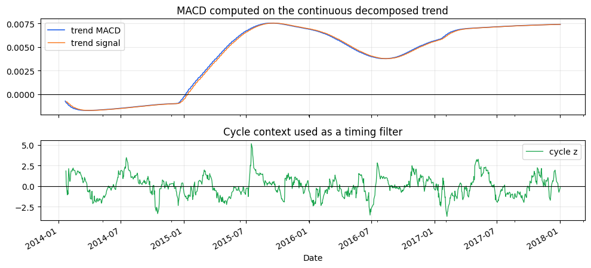
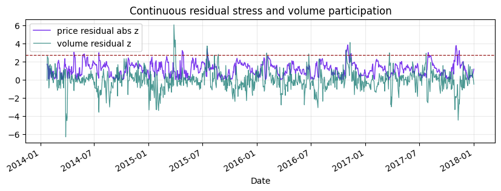
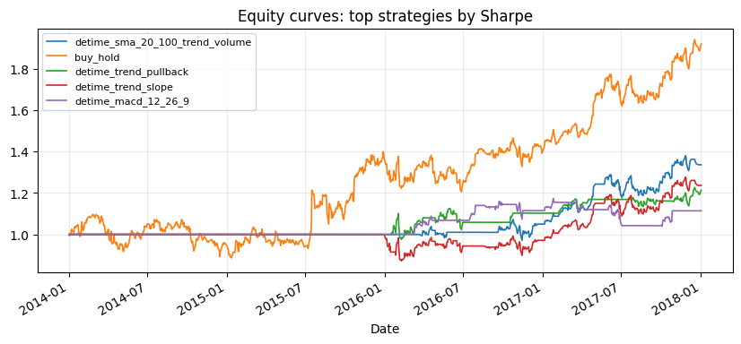
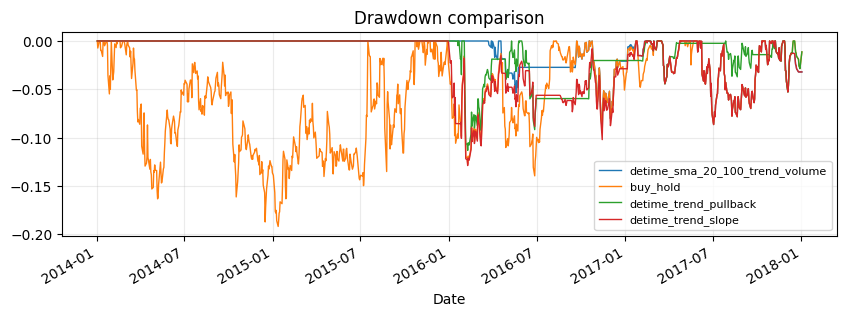
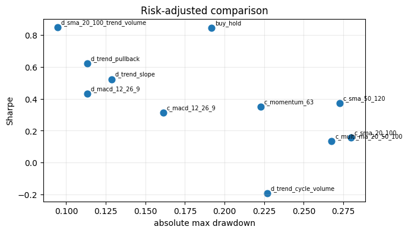
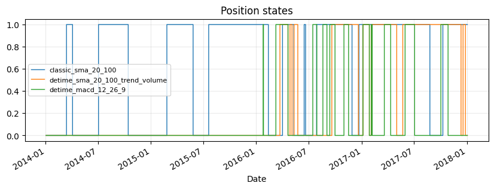

Tutorial 02 - Moving averages and MACD through decomposition
examples/notebooks/quant_trading/02_decomposition_aware_moving_average_macd.ipynb and includes markdown cells, code cells, stdout, tables, and captured figures from the committed notebook.
Tutorial Navigation
| Track | Tutorial notebook |
|---|---|
| Roadmap | Tutorial 00 - Roadmap |
| Strategy Lab | 01 Trend-Following Lab |
| Tutorial Sequence | 01 Real Market Data and Feature Factory |
| Tutorial Sequence | 02 Decomposition-aware MA and MACD |
| Strategy Lab | 02 Oscillation-Reversion Lab |
| Strategy Expansion | 03 Method-Specific Variants |
| Tutorial Sequence | 03 Residual Mean Reversion |
| Strategy Expansion | 04 Component Pair Trading |
| Tutorial Sequence | 04 Donchian Breakout |
| Tutorial Sequence | 05 Pair-Spread Stat-Arb |
| Tutorial Sequence | 06 Cross-Sectional Rotation |
| Native SSA Replay | 07 Native SSA High-Return / Low-Drawdown |
Executed Notebook
This tutorial starts from familiar timing strategies-buy and hold, dual moving averages, multi-moving-average alignment, MACD and momentum-then rewrites the signal inputs through DeTime components.
The point is to make the hidden structure explicit: moving averages estimate trend, MACD measures trend acceleration, residual features measure structural overextension, and volume decomposition checks participation.
from pathlib import Path
import matplotlib.pyplot as plt
import numpy as np
import pandas as pd
from IPython.display import display
from examples.quant_trading.data import load_sample_goog_ohlcv, market_data_manifest, ohlcv_audit_report
from examples.quant_trading.classic_indicators import macd, sma
from examples.quant_trading.features import decompose_one_series, walkforward_decompose_ohlcv
from examples.quant_trading.strategy_baselines import make_classic_baseline_weight_grid, run_classical_baselines
from examples.quant_trading.strategy_detime import (
compare_classical_and_detime,
make_detime_trend_weight_grid,
run_detime_trend_baselines,
)
from examples.quant_trading.validation import compare_weight_strategies, write_run_audit
pd.set_option("display.max_columns", 20)
REPORT_DIR = Path("examples/quant_trading/reports")
REPORT_DIR.mkdir(parents=True, exist_ok=True)
1. Data and feature setup
The same GOOG OHLCV sample is used so that Tutorial 02 connects directly to the feature factory built in Tutorial 01.
ohlcv_single = load_sample_goog_ohlcv(trim_start="2014-01-01")
ticker = ohlcv_single.attrs.get("symbol", "GOOG")
ohlcv = {field: ohlcv_single[[field]].rename(columns={field: ticker}) for field in ["Open", "High", "Low", "Close", "Volume"]}
prices = ohlcv["Close"]
DECOMP_PERIOD_CANDIDATES = (63, 126, 252)
DECOMP_TRAIN_WINDOW = 504
DECOMP_STEP = 5
DECOMP_Z_WINDOW = 63
features = walkforward_decompose_ohlcv(
ohlcv,
method="STL",
period="auto",
period_candidates=DECOMP_PERIOD_CANDIDATES,
train_window=DECOMP_TRAIN_WINDOW,
step=DECOMP_STEP,
z_window=DECOMP_Z_WINDOW,
)
prices.tail()
| GOOG | |
|---|---|
| Date | |
| 2017-12-26 | 1056.739990 |
| 2017-12-27 | 1049.369995 |
| 2017-12-28 | 1048.140015 |
| 2017-12-29 | 1046.400024 |
| 2018-01-02 | 1065.000000 |
2. Classical baselines first
The baseline layer is intentionally plain: buy-and-hold, dual SMA, MACD, multi-MA alignment and simple momentum. These strategies estimate market state directly from raw close prices.
classical_weights = make_classic_baseline_weight_grid(prices)
classical_table, classical_results = compare_weight_strategies(prices, classical_weights, fee_bps=1.0, slippage_bps=2.0)
display(classical_table[["total_return", "cagr", "sharpe", "max_drawdown", "average_turnover"]].round(4))
| total_return | cagr | sharpe | max_drawdown | average_turnover | |
|---|---|---|---|---|---|
| strategy | |||||
| buy_hold | 0.9207 | 0.1772 | 0.8469 | -0.1918 | 0.0000 |
| classic_sma_50_120 | 0.2176 | 0.0504 | 0.3719 | -0.2727 | 0.0129 |
| classic_momentum_63 | 0.2095 | 0.0487 | 0.3515 | -0.2227 | 0.0585 |
| classic_macd_12_26_9 | 0.1582 | 0.0374 | 0.3132 | -0.1612 | 0.0813 |
| classic_sma_20_100 | 0.0512 | 0.0126 | 0.1581 | -0.2797 | 0.0169 |
| classic_multi_ma_20_50_100 | 0.0367 | 0.0090 | 0.1337 | -0.2677 | 0.0248 |
fig, ax = plt.subplots(figsize=(10, 4))
prices[ticker].plot(ax=ax, linewidth=1.0, label="close")
sma(prices, 20)[ticker].plot(ax=ax, linewidth=1.0, label="SMA 20")
sma(prices, 100)[ticker].plot(ax=ax, linewidth=1.0, label="SMA 100")
ax.set_title("Classical dual moving-average inputs")
ax.legend()
ax.grid(True, alpha=0.25)
plt.show()

classic_macd = macd(prices, fast=12, slow=26, signal=9)
fig, ax = plt.subplots(figsize=(10, 3))
classic_macd["macd"][ticker].plot(ax=ax, linewidth=1.0, label="MACD")
classic_macd["signal"][ticker].plot(ax=ax, linewidth=1.0, label="signal")
ax.axhline(0, linewidth=0.8)
ax.set_title("Classical MACD on raw close")
ax.legend()
ax.grid(True, alpha=0.25)
plt.show()

3. DeTime rewrites
The DeTime strategy layer keeps the same trading vocabulary but changes the input object. Dual MA and MACD are calculated on the decomposed trend. Cycle and residual features filter entries that are late in the oscillation or structurally overextended. Volume trend and volume residual confirm participation.
detime_weights = make_detime_trend_weight_grid(prices, features)
detime_table, detime_results = compare_weight_strategies(prices, detime_weights, fee_bps=1.0, slippage_bps=2.0)
display(detime_table[["total_return", "cagr", "sharpe", "max_drawdown", "average_turnover"]].round(4))
| total_return | cagr | sharpe | max_drawdown | average_turnover | |
|---|---|---|---|---|---|
| strategy | |||||
| detime_sma_20_100_trend_volume | 0.3368 | 0.0753 | 0.8504 | -0.0947 | 0.0159 |
| detime_trend_pullback | 0.2134 | 0.0495 | 0.6237 | -0.1132 | 0.0129 |
| detime_trend_slope | 0.2367 | 0.0545 | 0.5235 | -0.1288 | 0.0218 |
| detime_macd_12_26_9 | 0.1139 | 0.0273 | 0.4314 | -0.1132 | 0.0218 |
| detime_trend_cycle_volume | -0.0770 | -0.0198 | -0.1920 | -0.2268 | 0.0476 |
diagnostic = decompose_one_series(
prices[ticker],
method="STL",
period="auto",
period_candidates=DECOMP_PERIOD_CANDIDATES,
z_window=DECOMP_Z_WINDOW,
transform="log",
)
volume_diagnostic = decompose_one_series(
ohlcv["Volume"][ticker],
method="STL",
period=int(diagnostic.attrs.get("period", 126)),
z_window=DECOMP_Z_WINDOW,
transform="log1p",
)
trend_price = np.exp(diagnostic["trend"]).to_frame(ticker)
fig, ax = plt.subplots(figsize=(10, 4))
prices[ticker].plot(ax=ax, linewidth=0.9, color="#1f2937", label="close")
trend_price[ticker].plot(ax=ax, linewidth=2.0, color="#0f766e", label="continuous DeTime trend")
sma(trend_price, 20)[ticker].plot(ax=ax, linewidth=1.0, color="#f97316", label="trend SMA 20")
sma(trend_price, 100)[ticker].plot(ax=ax, linewidth=1.0, color="#dc2626", label="trend SMA 100")
ax.set_title("Continuous decomposition trend used by MA rewrites")
ax.legend()
ax.grid(True, alpha=0.25)
plt.show()

diagnostic_trend = diagnostic["trend"].to_frame(ticker)
trend_macd = macd(diagnostic_trend, fast=12, slow=26, signal=9)
fig, axes = plt.subplots(2, 1, figsize=(10, 4.6), sharex=True, gridspec_kw={"height_ratios": [1.2, 1.0]})
trend_macd["macd"][ticker].plot(ax=axes[0], linewidth=1.2, color="#2563eb", label="trend MACD")
trend_macd["signal"][ticker].plot(ax=axes[0], linewidth=1.0, color="#f97316", label="trend signal")
axes[0].axhline(0, color="black", linewidth=0.8)
axes[0].set_title("MACD computed on the continuous decomposed trend")
axes[0].legend(loc="best")
axes[0].grid(True, alpha=0.25)
diagnostic["cycle_z"].plot(ax=axes[1], linewidth=0.9, color="#16a34a", label="cycle z")
axes[1].axhline(0, color="black", linewidth=0.8)
axes[1].set_title("Cycle context used as a timing filter")
axes[1].legend(loc="best")
axes[1].grid(True, alpha=0.25)
plt.tight_layout()
plt.show()

fig, ax = plt.subplots(figsize=(10, 3))
diagnostic["residual_abs_z"].plot(ax=ax, linewidth=1.1, color="#7c3aed", label="price residual abs z")
volume_diagnostic["residual_z"].plot(ax=ax, linewidth=0.9, color="#0f766e", alpha=0.75, label="volume residual z")
ax.axhline(2.75, linestyle="--", linewidth=0.9, color="#991b1b")
ax.set_title("Continuous residual stress and volume participation")
ax.legend()
ax.grid(True, alpha=0.25)
plt.show()

4. Compare strategy curves
The comparison keeps every baseline visible, then adds the decomposition-aware strategies below the same cost assumptions.
comparison = compare_classical_and_detime(
run_classical_baselines(prices, fee_bps=1.0, slippage_bps=2.0),
run_detime_trend_baselines(prices, features, fee_bps=1.0, slippage_bps=2.0),
)
display(comparison[["strategy_group", "total_return", "cagr", "sharpe", "max_drawdown", "average_turnover"]].round(4))
| strategy_group | total_return | cagr | sharpe | max_drawdown | average_turnover | |
|---|---|---|---|---|---|---|
| strategy | ||||||
| detime_sma_20_100_trend_volume | detime | 0.3368 | 0.0753 | 0.8504 | -0.0947 | 0.0159 |
| buy_hold | classical | 0.9207 | 0.1772 | 0.8469 | -0.1918 | 0.0000 |
| detime_trend_pullback | detime | 0.2134 | 0.0495 | 0.6237 | -0.1132 | 0.0129 |
| detime_trend_slope | detime | 0.2367 | 0.0545 | 0.5235 | -0.1288 | 0.0218 |
| detime_macd_12_26_9 | detime | 0.1139 | 0.0273 | 0.4314 | -0.1132 | 0.0218 |
| classic_sma_50_120 | classical | 0.2176 | 0.0504 | 0.3719 | -0.2727 | 0.0129 |
| classic_momentum_63 | classical | 0.2095 | 0.0487 | 0.3515 | -0.2227 | 0.0585 |
| classic_macd_12_26_9 | classical | 0.1582 | 0.0374 | 0.3132 | -0.1612 | 0.0813 |
| classic_sma_20_100 | classical | 0.0512 | 0.0126 | 0.1581 | -0.2797 | 0.0169 |
| classic_multi_ma_20_50_100 | classical | 0.0367 | 0.0090 | 0.1337 | -0.2677 | 0.0248 |
| detime_trend_cycle_volume | detime | -0.0770 | -0.0198 | -0.1920 | -0.2268 | 0.0476 |
all_results = {**classical_results, **detime_results}
leaders = comparison.head(5).index.tolist()
fig, ax = plt.subplots(figsize=(10, 4))
for name in leaders:
all_results[name].equity.plot(ax=ax, linewidth=1.2, label=name)
ax.set_title("Equity curves: top strategies by Sharpe")
ax.legend(loc="best", fontsize=8)
ax.grid(True, alpha=0.25)
plt.show()

fig, ax = plt.subplots(figsize=(10, 3))
for name in leaders[:4]:
dd = all_results[name].equity / all_results[name].equity.cummax() - 1.0
dd.plot(ax=ax, linewidth=1.0, label=name)
ax.set_title("Drawdown comparison")
ax.legend(loc="best", fontsize=8)
ax.grid(True, alpha=0.25)
plt.show()

plot_table = comparison.copy()
fig, ax = plt.subplots(figsize=(7, 4))
ax.scatter(plot_table["max_drawdown"].abs(), plot_table["sharpe"], s=60)
for name, row in plot_table.iterrows():
ax.annotate(name.replace("classic_", "c_").replace("detime_", "d_"), (abs(row["max_drawdown"]), row["sharpe"]), fontsize=7, xytext=(4, 4), textcoords="offset points")
ax.set_xlabel("absolute max drawdown")
ax.set_ylabel("Sharpe")
ax.set_title("Risk-adjusted comparison")
ax.grid(True, alpha=0.25)
plt.show()

fig, ax = plt.subplots(figsize=(10, 3))
for name in ["classic_sma_20_100", "detime_sma_20_100_trend_volume", "detime_macd_12_26_9"]:
weights = (classical_weights | detime_weights)[name]
weights[ticker].plot(ax=ax, drawstyle="steps-post", linewidth=1.0, label=name)
ax.set_title("Position states")
ax.legend(loc="best", fontsize=8)
ax.grid(True, alpha=0.25)
plt.show()

paths = write_run_audit(
REPORT_DIR,
data_manifest=market_data_manifest(
tickers=[ticker],
start=str(prices.index.min().date()),
end=str(prices.index.max().date()),
interval="1d",
source=ohlcv_single.attrs.get("source", "bundled historical OHLCV sample"),
),
audit=ohlcv_audit_report(ohlcv),
strategy_stats=comparison,
prefix="column_02",
)
display(pd.DataFrame({"artifact": list(paths), "path": [str(p) for p in paths.values()]}))
| artifact | path | |
|---|---|---|
| 0 | manifest | examples\quant_trading\reports\column_02_marke... |
| 1 | data_audit | examples\quant_trading\reports\column_02_data_... |
| 2 | strategy_stats | examples\quant_trading\reports\column_02_strat... |
| 3 | run_manifest | examples\quant_trading\reports\column_02_run_m... |